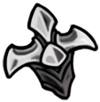
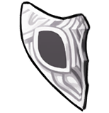
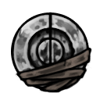
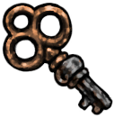
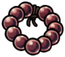
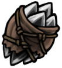

Silksong's Items

Spool fragment
Spool Fragments are Items in Hollow Knight: Silksong that are used to increase Hornet's Silk capacity.
Two Spool Fragments are combined to form a Spool, which increases Hornet's Silk capacity by 1.
There are 18 total Spool Fragments to collect, allowing Hornet to hold 9 additional Silk once all Spool Fragments have been collected.
Upgrade

Mask Shard
Mask Shards are Items in Hollow Knight: Silksong that are used to increase Hornet's Health.
ask Shards are fragments of Ancient Masks. 4 Mask Shards are needed to form an Ancient Mask, which increases Hornet's health by one Mask.
With a total of 20 Mask Shards in the game, the Mask count can be increased by 5, for a maximum of 10 permanent Masks.
Upgrade

Memory locket
Memory Lockets are Items used to expand the capabilities of Crests.
Each Crest starts with a different number of locked slots for Red ToolRed, Blue ToolBlue, and Yellow ToolYellow Tools,
which can be unlocked by using Memory Lockets in the Crest menu. This can be done even while not sitting at a bench.
Crest Upgrade

Simple Key
Simple Keys are items in Hollow Knight: Silksong. They can be used to open simple locks. Each key can only be used once.
4 in all game
Key Item

Rosary
Rosaries are the currency of Pharloom used in Hollow Knight: Silksong. Rosaries can be found in multiple colours
Currency

Shards
Shell Shards are used to repair and craft the Tools that Hornet uses alongside her Needle.
Tools can only be repaired when resting at a Bench and different Tools require a different number of Shell Shards to be repaired.
Currency